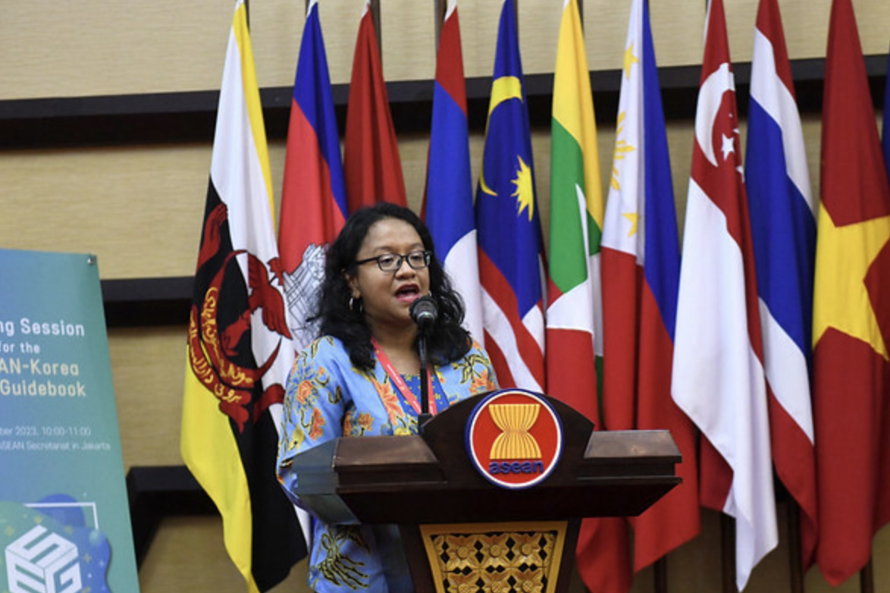
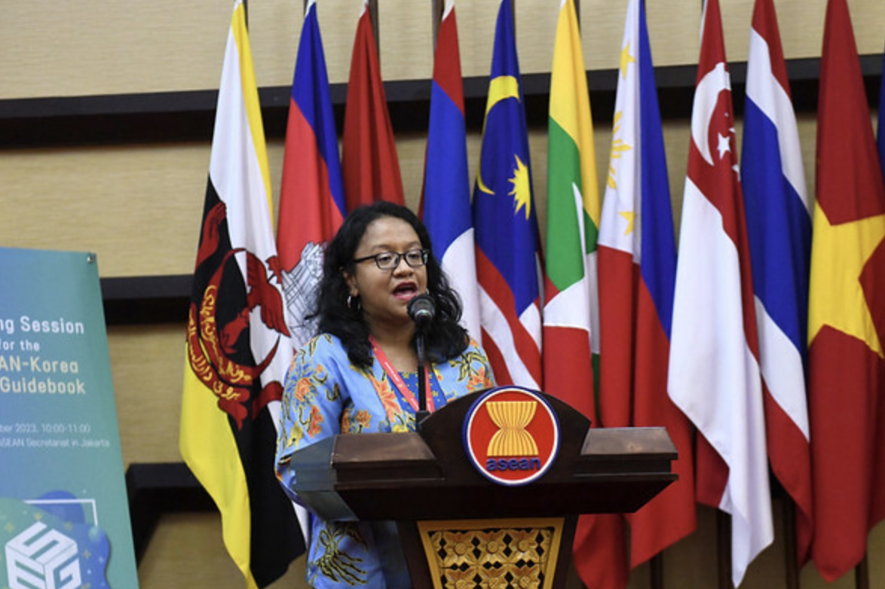

Kerja sama Regional merupakan bentuk kerja sama yang dilakukan oleh beberapa negara yang berada dalam satu kawasan atau wilayah. Tujuannya adalah untuk memenuhi kepentingan bersama, seperti meningkatkan keamanan, mengembangkan pendidikan, memperkuat hubungan sosial dan budaya, masih banyak lagi. Kerja sama ini biasanya terlaksanakan melalui organisasi, seperti ASEAN atau Uni Eropa.
Contoh Kerja sama:
★ Kerja sama Penanganan Bencana ASEAN, negara-negara ASEAN saling membantu saat terjadi bencana alam. Misal, negara ASEAN lainnya membantu Indonesia yang baru saja terkena bencana alam.
★ Program Pertukaran Pelajar ASEAN, negara-negara di ASEAN melakukan pertukaran pelajar untuk meningkatkan kualitas pendidikan dan memperluas pengetahuan budaya.
★ Negara-negara ASEAN melakukan kerjasama dalam bidang ekonomi, keamanan, pendidikan, dan budaya untuk memperbudaya perdagangan antarnegara ASEAN.